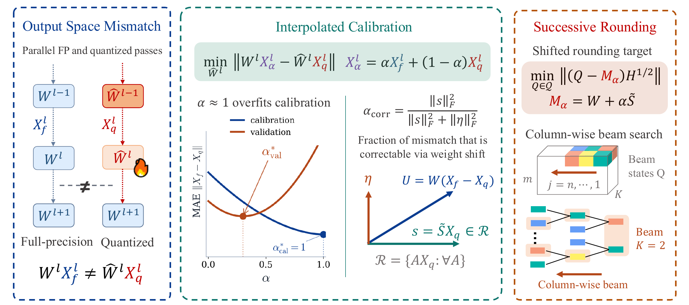
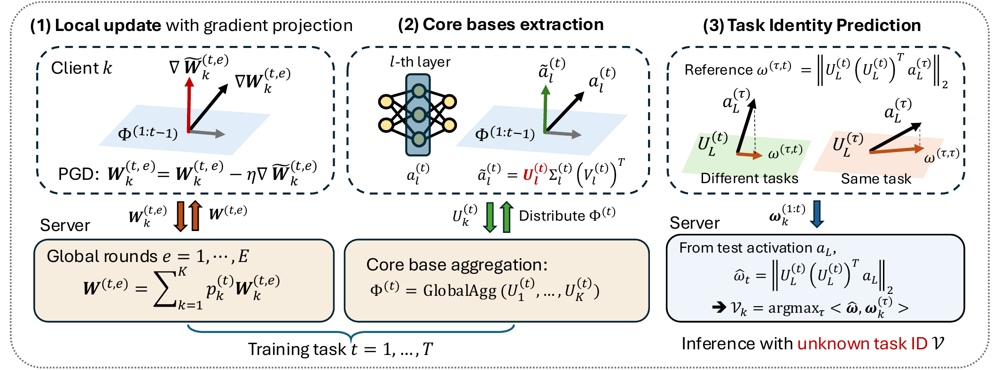
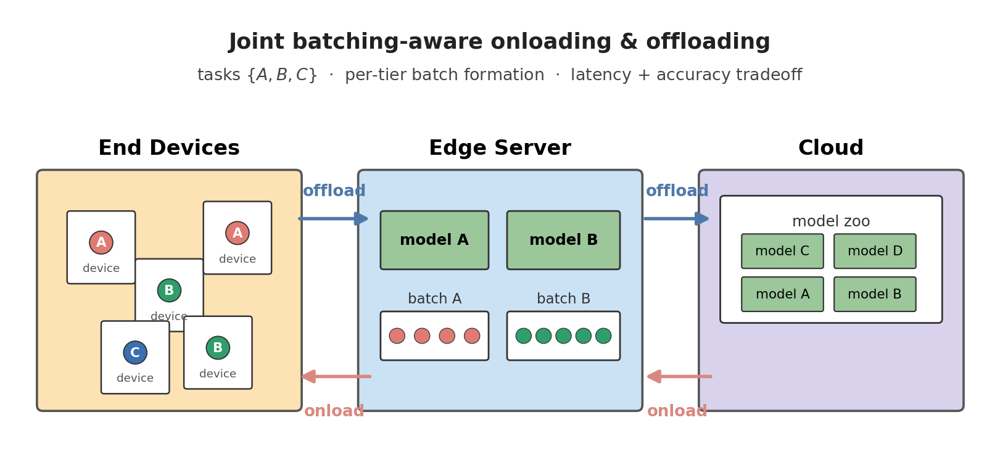
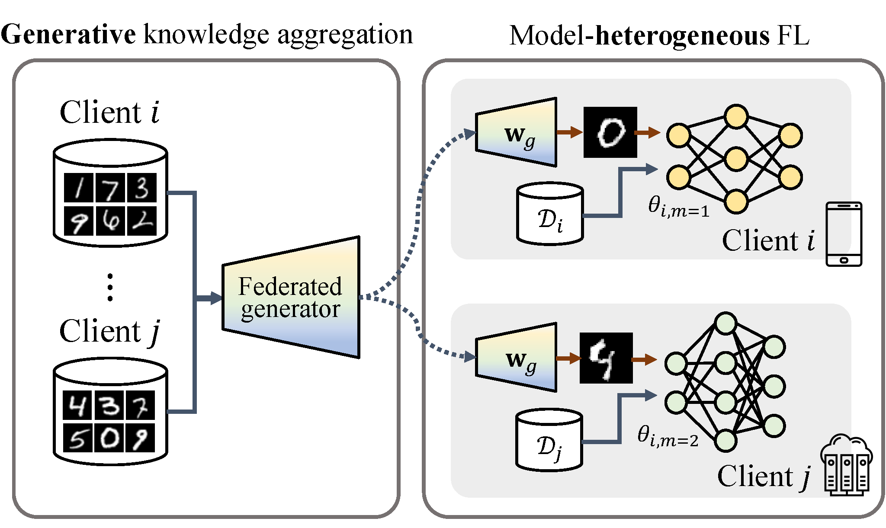
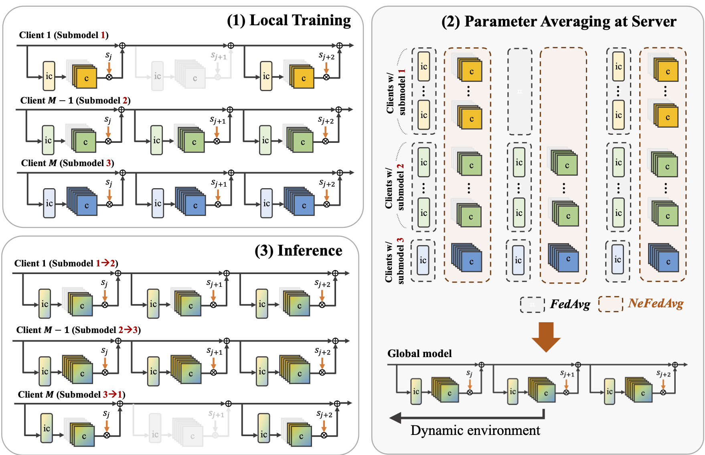
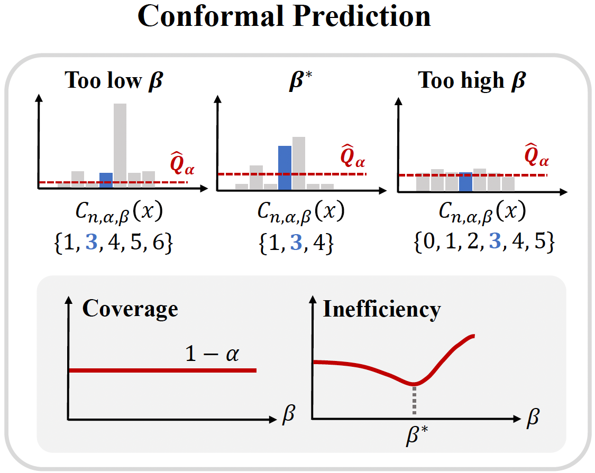
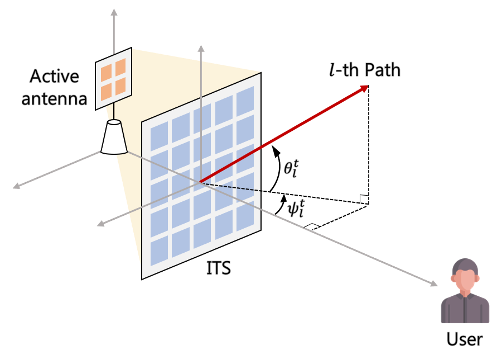

|
Seohyeon Cha
I'm a second-year PhD student at UT Austin ECE, advised by Prof. Haris Vikalo.
My research develops efficient, trustworthy AI for decentralized, resource-constrained systems — designing methods that preserve reliability under tight compute/memory/latency budgets, device heterogeneity, and non-stationary deployments.
Previously, I completed my M.S. at the Advanced Radio Technology Lab, KAIST, where I also earned my B.S. in Electrical Engineering (Summa Cum Laude).
Email /
CV /
Scholar /
Github /
LinkedIn
|
|
Research Interests
- LLM quantization & speculative decoding for fast, resource-aware inference
- Continual learning in collaborative, privacy-preserving environments
- Task offloading and model onloading for hierarchical edge AI inference
|
Publications
* indicates equal contribution.
|
|

|
Regularized Calibration with Successive Rounding for Post-Training Quantization
Seohyeon Cha, Huancheng Chen, Dongjun Kim, Haoran Zhang, Kevin Chan, Gustavo de Veciana, Haris Vikalo
arXiv preprint, 2026
arXiv
A post-training quantization scheme that interleaves regularized calibration with successive rounding, reducing layer-wise activation error on LLaMA-family models at low bit-widths.
|
|

|
Task-Agnostic Federated Continual Learning via Replay-Free Gradient Projection
Seohyeon Cha*, Huancheng Chen*, Haris Vikalo
arXiv preprint, 2025
arXiv
Federated continual learning without per-client replay buffers: projected-gradient updates combined with core-basis extraction and a lightweight task-identity predictor for privacy-preserving CL under device heterogeneity.
|
|

|
Batching-Aware Joint Model Onloading and Offloading for Hierarchical Multi-Task Inference
Seohyeon Cha, Kevin Chan, Gustavo de Veciana, Haris Vikalo
arXiv preprint, 2025
arXiv
Joint scheduling of on-device inference and edge offloading with explicit batching awareness across a hierarchy of multi-task models, to meet latency targets under mixed traffic.
|
|

|
GeFL: Model-Agnostic Federated Learning with Generative Models
Honggu Kang*, Seohyeon Cha*, Jiwan Seo, Joonhyuk Kang
IEEE Transactions on Mobile Computing, 2025
paper /
project page
Federated learning across heterogeneous client models via a shared generative model that aggregates global knowledge. GeFL-F extends this with feature-generative models for stronger privacy and scalability.
|
|

|
NeFL: Nested Model Scaling for Federated Learning with System Heterogeneous Clients
Honggu Kang, Seohyeon Cha, Jinwoo Shin, Jongmyeong Lee, Joonhyuk Kang
IEEE Transactions on Mobile Computing, 2025
arXiv /
project page
A generalized framework that divides deep networks into submodels via both depthwise and widthwise scaling, interpreting forward propagation as solving an ODE with adaptive step sizes. Decoupled parameters handle inconsistencies when training multiple submodel architectures.
|
|

|
On the Temperature of Bayesian Graph Neural Networks for Conformal Prediction
Seohyeon Cha, Honggu Kang, Joonhyuk Kang
NeurIPS 2023 GLFrontiers Workshop
paper
Introduces a temperature parameter into Bayesian GNNs within conformal prediction, empirically showing temperatures that produce more efficient prediction sets and clarifying the link between CP efficiency and model calibration.
|
|

|
Intelligent Surface-aided Transmit-array Antenna in mmWave Communication System with Historical Channel Observation
Seohyeon Cha, Sanghyuk Kim, Jiwan Seo, Joonhyuk Kang
IEEE ICCE-Asia, 2022
paper
A stochastic-gradient-descent scheme that optimizes the phase-shift matrix of an intelligent transmitting surface in mmWave downlink using only historical channel observations.
|
|
{kind=link}